Do not use this guide yet. It is a draft and has not been reviewed. Nothing may be built from it (no skin, kit piece or game art) until it is finished and a human has reviewed and approved it (owner, 2026-10-31: "Make a note to not use the guide until it's ready and human reviewed").
Fleet Command · design guide · draft, growing as we learn · living panels rendered in Blender
How to build an interface that is grown, not built: crisp instruments held in a living frame. The frame is flesh, chitin and bone in one body, the screens are black smoked glass, and the keys are hard, dark and lit at their rims. This is the organic counterpart of the Analog Panel Bible.
Draft. This guide is a living document: the method behind organic interfaces is still being found, one study step at a time, and every new lesson is added here (owner, 2026-10-31: "it's in draft and we'll be adding to it as we discover the methodology behind organic ui"). The study's latest notes from the owner: build the body in layers (bone underneath, muscle over it, leather stretched over both, veins under the skin), sculpt it rather than placing shapes, blend the textures, make it wetter, and never use raw primitives.
Owner, 2026-10-31"Nah that's bad lol. Let's make a new design system for organic" · "The brood is overly simple. It's just metal with ameobas on top. Completely missing the zerg aesthetic"
This guide goes with the skill .claude/skills/blender-organic-panels, which holds the Blender procedure, and the study generator tools/blender/organic_study.py, which renders every image here. The direction comes from the owner's notes and two reference screenshots of a hive race's interface that are not committed: we take how it is built (its shapes, materials and light), never its art. Every shape, word and colour on this page is our own.
The study's last step: one corner of a living console, rendered face on in Blender exactly as a kit piece is. Everything you see is one body (flesh, chitin plates, bone) except the instruments it holds: the screen, the keys and the portrait.
Rule 1
Never use raw primitives
The owner, 2026-10-31: "I don't like the pubbles and the white tendril. These look like low effort shapes. Whereas the organic leather frame looks a little more purposeful and organic", and "never use raw primitives".
No raw primitive is ever a visible form. No sphere, capsule, cylinder, cone, torus, plain tube or smooth untextured spike appears in a render as itself: not a bead, a pustule, a spine, a claw, a rib or a tendril.
Every form is sculpted into the one body and carries its skin detail. A bead row becomes vertebrae under the skin; a spine becomes a bone crest the skin thins over; a pustule becomes a swelling in the leather with light glowing through it; a tendril becomes a sinew cord raised under the skin. Pores, wrinkles, veins and wetness run over all of it.
Primitives may only be invisible construction: metaball seeds, cutters and the shapes a height field is computed from, which the sculpt and its remesh absorb so no trace of them survives.
The crisp instruments (the screen glass, the key caps, the portrait) are tech, not body, and keep their clean edges (chapter 4).
Chapter 1
One organism
An organic console is not a set of panels with growth added. It is one creature that holds instruments. Three ideas follow from that, and every later chapter is one of them in practice:
The frame and the backdrop are the same body. Panels are swellings in one ribbed wall of tissue; tubes, veins and ribs run from one to the next. There is no black gap between panels, and no panel floats.
The tech is crisp, the frame is soft. The parts a captain reads or presses (screens, keys, the portrait) are hard-edged, dark and clean. Everything round them is curved, wet and uneven. The contrast between the two is the look.
The body breaks the rectangle; the instruments do not. Spines, horns and arches grow past a panel's edge and over its neighbours, but every screen and key face stays an exact, measured rectangle that nothing covers.
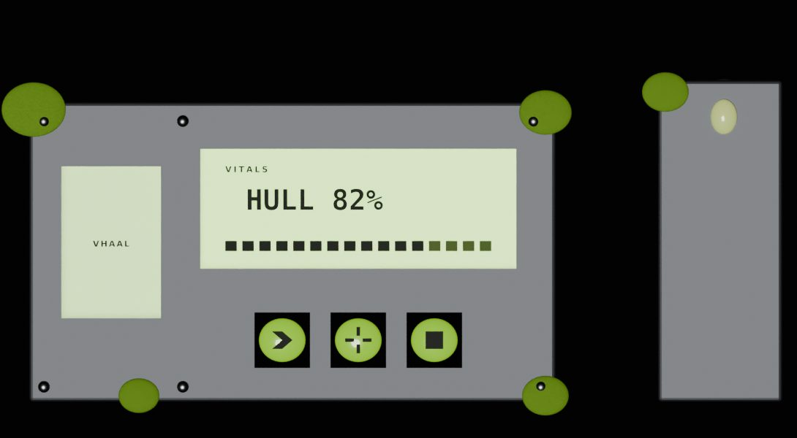
Don't: a machine with growth stuck on top. Grey plate, cut openings, lime blobs, a lit lime screen.Do: one body grown round the instruments, standing in a wall of the same tissue.
Chapter 2
Five materials
The whole look is five materials. Each has one job, and none is grey metal.
Flesh
The frame and the wall. Dark maroon-brown, leathery: fine pores and diagonal creases in the bump, its colour stepped by its own ambient occlusion (black in the folds, lit brown on the swells), a little subsurface so thin edges warm up, and a satin wet coat.
base #33110f · lit #6a2620 · fold #080303 · roughness 0.62 · coat 0.55 at 0.22 · subsurface 0.08 over 1.5 mm
Chitin
The armour: segmented plates along a frame's top and shoulders, overlapping like vertebrae and sunk into the flesh so it swells round each one. Near black and hard, its shape carried by one sharp highlight under a clear coat, with a faint thin-film sheen.
base #140c0e to #4a3236 by noise · roughness 0.3 · coat 1.0 at 0.03 · thin film 380 nm
Bone
Spines, horns, claws and arches: ivory, waxy, darker at the root where it grows out of the flesh. The brightest solid thing on the console, so it draws the silhouette.
Every screen: a recess of near-black glass, glossy, with faint dark-red veins only at its edges, held by a thin bronze rim. The content glows on the black.
#050405 · roughness 0.12 · coat 1.0 · veins #3a0d0c outside 45% of a squarish oval · rim bronze #9a5a34, metal
Light
Things that glow: the readouts (pale green), the key rims and icons (our amber), the pustules (green, life), the crystal (violet, the heart). Light is never a surface colour of the frame.
Hard-surface panels are cut: a plate, a boolean, a bevel. Organic panels are grown: soft elements that merge wherever they meet, so one shape flows into the next with no seam.
Metaballs, then a remesh. Capsules hug each opening (thicker along the top, thinner below: the thick-and-thin rhythm), balls swell at the corners, negative cubes carve the openings. The metaball is converted to a mesh, voxel remeshed at 1.4 mm, lumped by a 2.2 mm cloud displacement and relaxed by corrective smoothing.
A ribcage rhythm. Short capsules laid across a frame's sides, longest in the middle and tapering at the ends, turn a tube into a ribbed thing. The wall behind is the same: ribs sweeping across every 24 mm, bowed and uneven.
Armour sunk, not stuck. Chitin plates overlap each other and sit half inside the flesh. A plate standing on a frame reads as a bean on a sausage (step 5 shows both).
Asymmetry. The left side carries the long canopy spines; the right side has short swept-back spines. A grown thing is never mirrored.
Past the edge. Arches, canopies and horns rise above a panel's top and over its neighbour. That is what makes the silhouette alive.
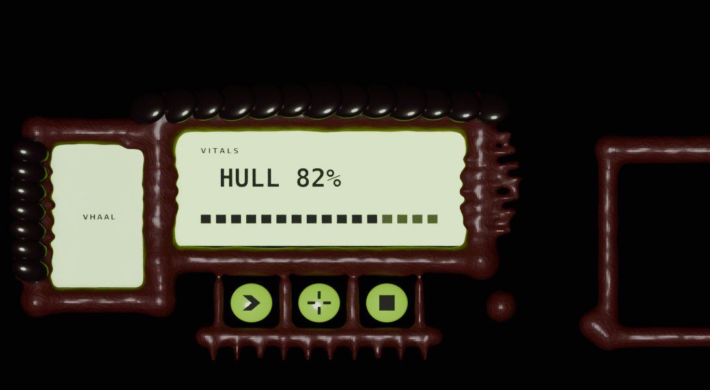
Step 4: the same body as step 3 with its ribs. Nothing new was cut; only more elements were grown into the same metaball.
Chapter 4
Crisp tech in a soft frame
What the captain reads and presses is the one place nothing is soft.
Screens are black. A smoked recess sunk 6 mm into the body, the readout glowing on it. A lit field behind dark letters (version 23's lime screens) is low contrast and fights every glow on the console.
A calm middle. The glass's veins live only near its rim; a squarish oval over the readout is plain black, so the letters sit on nothing.
Keys are square, dark and lit at the rim. A near-black cap with a small round, a thin glowing amber rim inset 2.5 mm, and a clean amber icon. It sits in a pit grown in the flesh. Soft green pillows read as more growth, not as something to press.
A press pushes the cap in. The cap sinks 3 mm and drops 2 mm; its rim and icon brighten; the flesh round it stays put (step 13).
The portrait lives in a pocket. A tall dark pocket under an arch of flesh, the face lit from below out of the dark. A flat name bar reads as a label, not a presence.
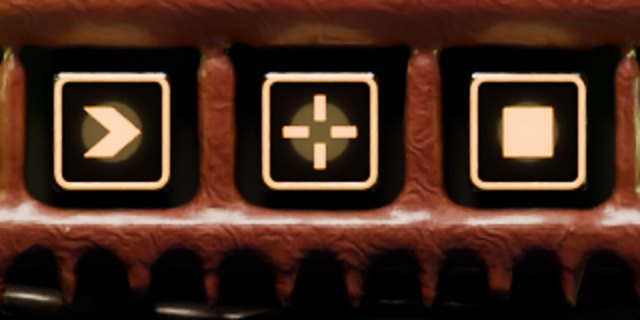
Keys at rest (step 12): dark caps, amber rims and icons, in pits grown in the flesh.
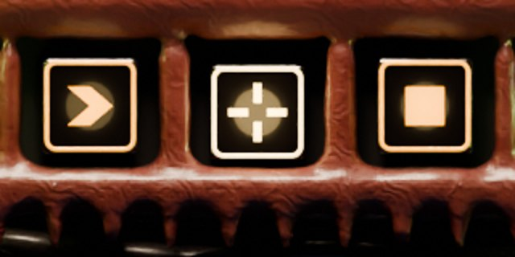
The middle key pressed (step 13): the cap sinks and drops, its rim brightens, nothing round it moves.
Chapter 5
Light
A warm key light from above, large and soft (an area light 180 mm wide, 420 mm up). It puts a wet highlight on every ridge's top and leaves the hollows under ribs and plates deep.
Two grazing rims from the sides, warm on the left and faintly violet on the right, at 30% and 20% of the key. They light the edges of the bone and the wet flesh, which is what makes a surface read as wet.
A dim cool fill from below, 3% of the key, only so the darkest folds are not pure black.
Bioluminescent accents light their surroundings. Each pustule has a tiny point light just in front of it, so the flesh round it picks up green. The crystal has one inside and one spilling below it.
Never a flat front light. Step 1 to 4 use one; step 5 shows the difference.
Step 4: one flat light from the front. The body reads as plastic.
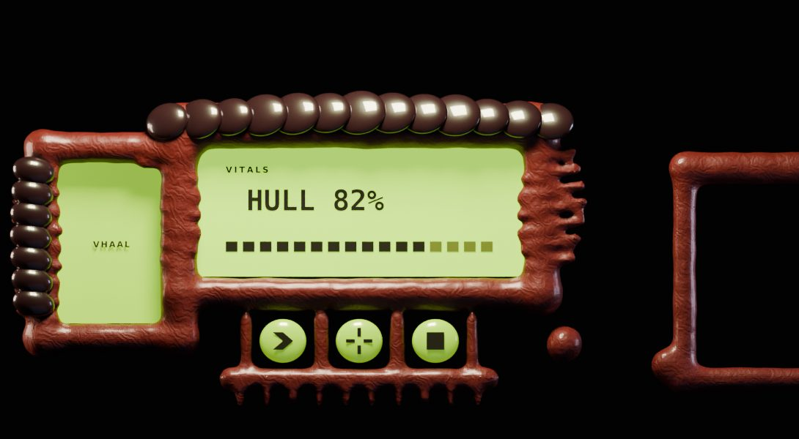
Step 5: warm from above, grazing rims, a dim cool fill. Ridges shine, hollows go deep.
Chapter 6
Palette and value
Version 23 used several mid hues at one value (grey, olive, lime), mottled together: it read as camouflage. The fix is few hues on a value ladder: the wall darkest, flesh dark, chitin dark with bright highlights, bone pale, and the light brightest. Each colour that glows has one meaning.
Fold#080303 · hollows, pits
Flesh#33110f · frame, wall
Lit flesh#6a2620 · swells
Chitin#140c0e · armour
Bone#e2d6bb · spines, horns
Screen#050405 · glass
Bronze#9a5a34 · screen rims
Readout#b8f27a · text on glass
Accent#ffb03a · keys only
Life#6fd82a · pustules, health
Hero#b35cff · the crystal only
Green is a light, never a surface. The amber accent is ours (the reference uses its own hot colour for keys); violet belongs to the hero alone.
Chapter 7
Fit rules, measured
Growth may cover a frame, a bezel or a neighbour's frame. It may never cover what a captain reads or presses. The study measures it on the geometry: every vertex of every growing object that stands in front of the screen glass is projected onto the view, and its distance to each protected rectangle is taken.
Rule
What it says
How it is checked
G1
No growth covers a screen, a key face or the portrait window.
Nearest growth vertex in front of the glass to each protected rectangle is 0 mm or more (organic_study.py measure).
G2
Children stay inside their parents: a readout inside its screen, an icon inside its key, the face inside its pocket.
Laid out from the protected rectangle with a margin; the kit's console_fit measures the page.
G3
Overhangs never cover another panel's content: a canopy may pass over a neighbour's frame, never its screen.
G1 run against every panel's rectangles, not only its own.
G4
A 9-slice piece keeps its growth in the corners and edges; the stretching middle is plain flesh, so it stretches without smearing a rib.
Margins chosen round the ribs, as in the analog kits.
Protected rectangle
Clearance
Nearest growth
Result
Screen
0.89 mm
body
pass
Portrait window
0.09 mm
canopy0
pass
Key 1 face
2.17 mm
body
pass
Key 2 face
2.33 mm
body
pass
Key 3 face
2.49 mm
body
pass
Chapter 8
Blender recipes
The body
Metaball, threshold 0.6, resolution 1.8 mm. Capsules round each opening (radius 22 mm on top, 18 on the sides, 18 below), balls at the corners at 1.25 x. Negative cubes, stiffness 10, carve the openings 3 mm larger than their rectangles. Convert to mesh; squash the back to 20%; Remesh, voxel 1.4 mm; Displace, clouds 18 mm, 2.2 mm; Corrective Smooth, 5 iterations; shade smooth.
Ribs
Capsules, radius 7-7.5 mm, length 14-22 mm (a sine across the run), turned 12-15 degrees, set 4-6 mm proud. The wall: tubes of radius 7.5-10 mm every 24 mm, bowed by a sine of 7 mm.
Flesh shader
Principled. Colour ramp fold #080303 at 0.3, flesh #33110f at 0.75, lit #6a2620 at 1.15, driven by AO (14 mm) + 0.3 x noise (scale 260, detail 10). Bump 0.5 over 0.6 mm from wave bands (scale 90, distortion 18) + noise. Roughness 0.62, coat 0.55 at 0.22, subsurface 0.08 random walk over 1.5 mm.
Chitin plates
UV spheres squashed to 15.5 x 13 x 6.5 mm, swelling 18% to the middle of a run, overlapping by a third, tilted -22 degrees and -18 degrees, half sunk. Shader: noise between #140c0e and #4a3236, roughness 0.3, coat 1.0 at 0.03, thin film 380 nm.
Bone
Bezier curves, bevel depth 3-10 mm, taper by point radius from 1.0 at the root to 0.05 at the tip. Shader ivory #e2d6bb, AO ramp to #8a7a5e at the root, roughness 0.38, coat 0.5, subsurface 0.15.
Smoked screen
A recess 6 mm into the body. Glass #050405, roughness 0.12, coat 1. Voronoi distance-to-edge (scale 30, width 0.03) for veins in #3a0d0c, masked by (dx/rx)^4 + (dy/ry)^4 from 0.45 to 1. Bronze rim: a 1.6 mm tube 4.5 mm outside the rectangle, corners 4 mm.
Keys
A box with a 2 mm, 4-segment bevel, #0e0a0b, roughness 0.28, coat 1. A 0.7 mm tube rim 2.5 mm inside the face, emission amber 1.6 (3.2 pressed). Flat icon polygons on the face, same emission. A point light 12 mm out, 0.012 W (0.03 pressed). Pressed: back 3 mm, down 2 mm.
Glow
Pustules: spheres, emission 0.8 with subsurface 0.5, and a point light of 0.012 W per mm of radius just in front. The crystal: hexagonal cones (a tip and a short root), transmission 0.6, emission 0.6 violet, a 0.3 W point inside and 0.25 W below.
Render
Cycles, CPU, 32 samples, denoised, AgX with medium-high contrast. Orthographic face on, 2 px per mm. World near black (#010101).
Chapter 9
What went wrong in v23
Version 23 rebuilt the Vhorr Brood as "assimilated tech": a captured machine with growth over it. The owner's verdict was that it was "just metal with ameobas on top". Compared element by element with the reference, in our own words:
Element
Version 23
What it should be
Step
Material
Grey stone and metal with lime moss blotches
Leathery maroon-brown flesh and near-black chitin with a wet sheen, ivory bone. No grey base; green only as light
3
Form
Flat, even-width rounded rectangles
Thick sculpted carapace, ribbed like a ribcage, a vertebral band along the top, asymmetric
2, 4
Silhouette
Inside the panel's box
Horns and spines arching over the panels, a canopy over the portrait, growing past the top edge
9
Screens
Lit lime fields behind dark text, low contrast
Near-black smoked recesses with a thin bronze rim; the content glows on black
6
Keys
Soft green pillows
Square dark caps with glowing amber rims and clean icons, set into the flesh
7
Name plate
A flat green bar
A tall fleshy pocket under an arch holding a live portrait
8
Joins
Separate boxes on black
One continuous ribbed wall of tissue; tubes, veins and ribs between the panels
10
Hero
A small egg in a grey disc
A big faceted violet crystal, the console's heartbeat
12
Light
Flat and even
Warm key from above, deep hollows, wet highlights on ridges, glowing accents
5, 11
Palette
Grey and lime everywhere
Dark flesh, ivory bone, black screens, one amber accent for keys, green for life, violet for the hero
3, 6, 11
The root cause was the premise: starting from a machine and adding growth made the growth decoration. Starting from the creature and letting it hold the machine (chapter 1) fixes all ten at once.
Chapter 10
Worked example
One corner of a console, built up in fourteen steps by tools/blender/organic_study.py. Each step changes one thing and keeps every change before it.
1 · Version 23's way
A grey plate with the openings cut by booleans, rivets, lime moss blobs, a lit lime screen with dark text, green pillow keys, a flat green name bar and a small egg in a disc.
Lesson: growth added to a machine is decoration. Chapter 1.
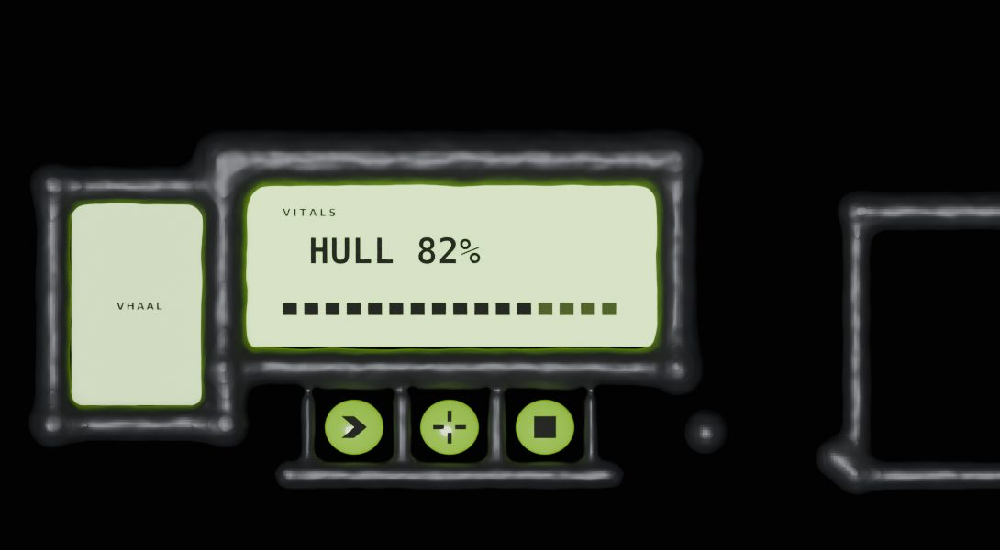
2 · One sculpted body
The plate became one metaball body grown round every opening, the neighbour panel's frame part of the same body. Still grey, so only the form changed.
Lesson: grow, don't cut. Chapter 3.
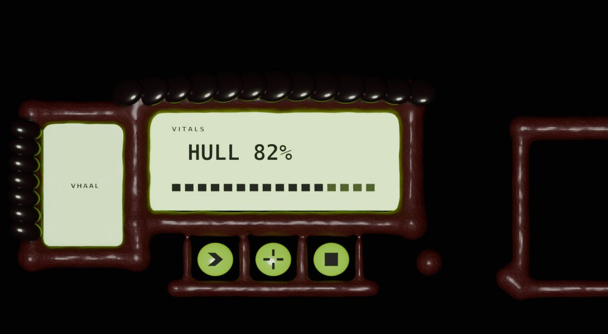
3 · Flesh and chitin, not stone
Leathery maroon-brown flesh with pores, creases and a wet coat; a band of near-black chitin plates sunk along the top and down the portrait's shoulder.
Lesson: the material is most of the look. Chapter 2.
4 · A ribcage rhythm
Ribs across the screen frame's sides, longest in the middle; ribs down the portrait pocket; short ribs under the key shelf.
Lesson: repetition with variation reads as anatomy. Chapter 3.
5 · Warm light from above
The flat front light became a warm soft key from above, two grazing rims and a dim cool fill. The flesh turned wet, the hollows deep.
Lesson: wetness is a highlight on a ridge against a dark hollow. Chapter 5.
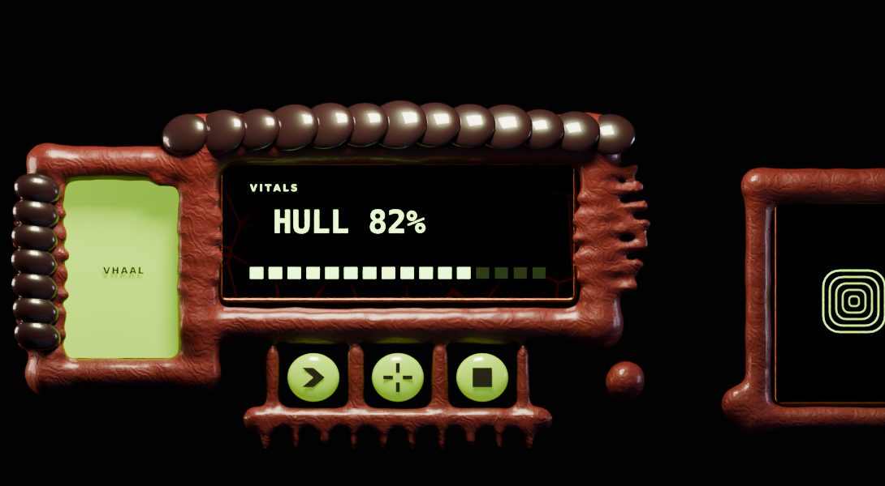
6 · Screens are black smoked glass
The lime field became a near-black glass recess with a thin bronze rim, its veins only at the edges; the readout glows on it.
Lesson: content glows on black; a lit field behind text loses contrast. Chapter 4.
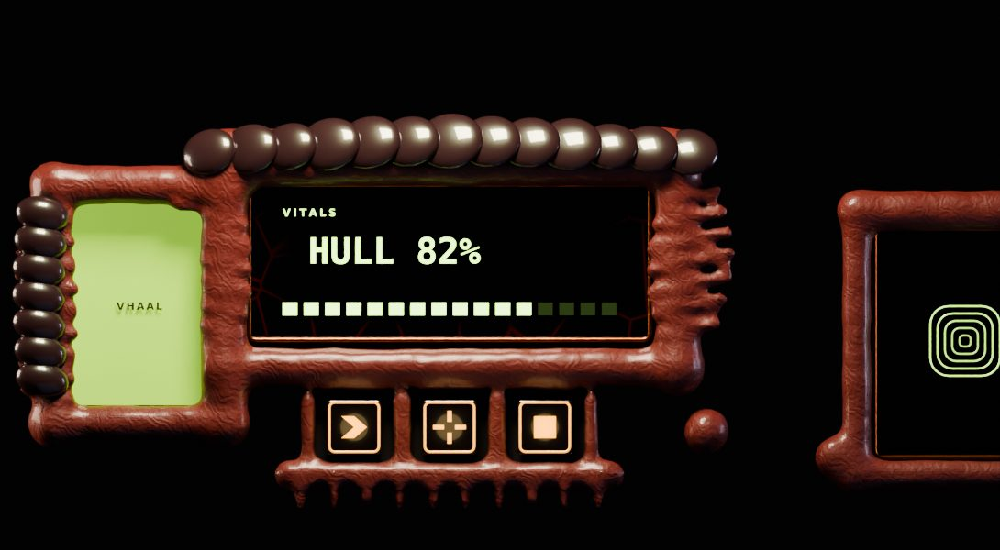
7 · Crisp keys set into the flesh
The green pillows became square dark caps with glowing amber rims and clean icons, each in a pit grown in the flesh.
Lesson: the parts you press are tech, crisp and hard. Chapter 4.
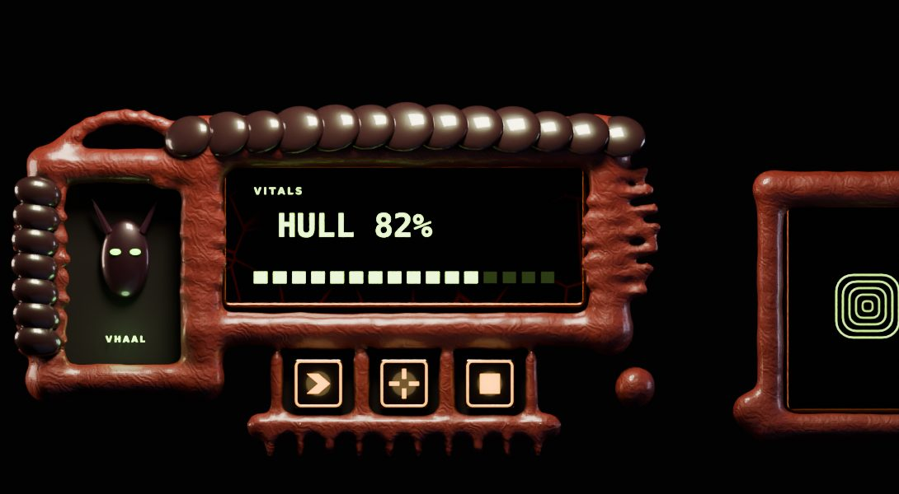
8 · A portrait pocket under an arch
The flat name bar became a tall dark pocket under a bow of flesh, a face lit from below inside it, its name glowing at its foot.
Lesson: the captain's officer is a presence, not a label.
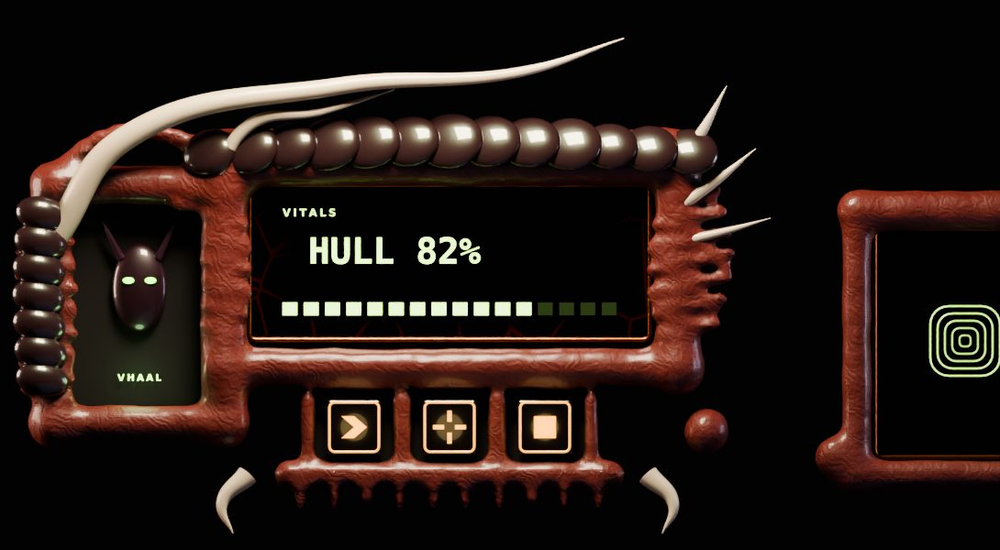
9 · Bone spines arching over
Two long ivory spines rise behind the portrait and arch over it and the screen's corner; short swept-back spines off the right; claws curl under the key shelf.
Lesson: the silhouette breaks the rectangle; the instruments do not. Chapter 3.
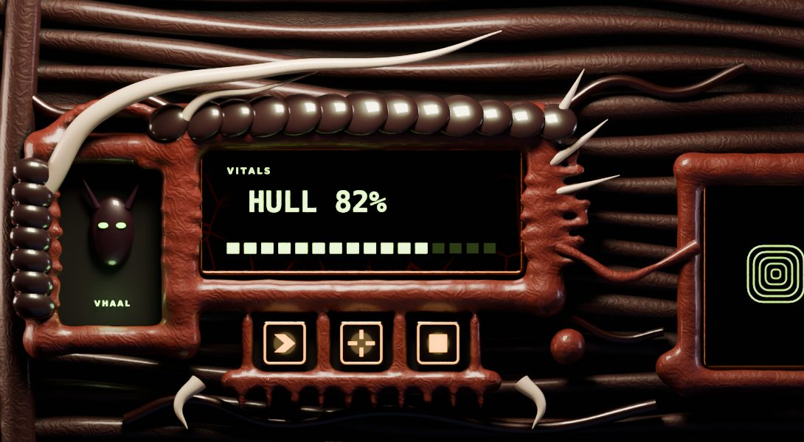
10 · One wall of tissue
The black backdrop became a ribcage wall of the same flesh, darker; tubes and veins run between the panels, half sunk; a tendril reaches the neighbour, thick at its roots, thin and knotted between.
Lesson: no panel floats. Chapter 1.
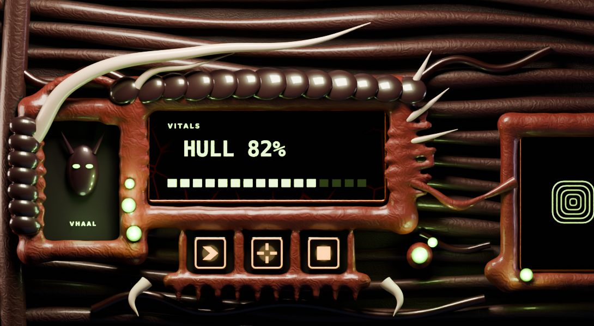
11 · Green for life only
Pustules at the joints glow green from inside and light the flesh round them. Green appears nowhere else as a surface.
Lesson: each glowing colour has one meaning. Chapter 6.
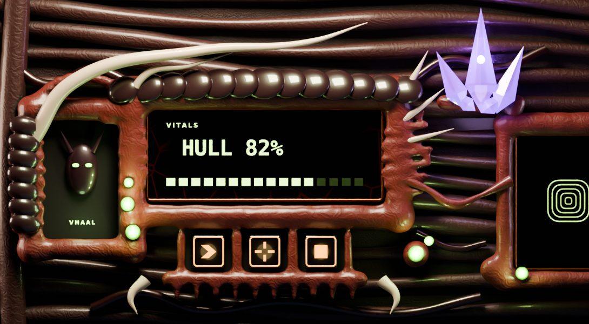
12 · A crystal heart
A cluster of faceted violet shards in a cradle of flesh above the neighbour panel, lit from inside, spilling violet below.
Lesson: one big focal object gives the console a heartbeat.
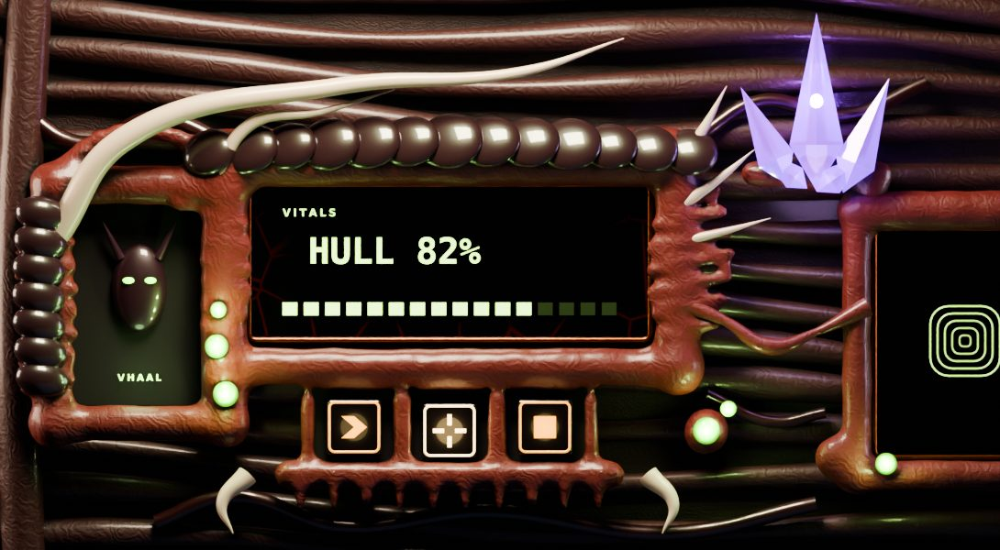
13 · Pressed
The middle key pressed: its cap sinks 3 mm and drops 2 mm, its rim and icon brighten, and the flesh round it stays put.
Lesson: the inner part moves, the frame never does (version 20's rule).
14 · Final, measured
All of it, with the fit measured: no growth covers the screen, a key face or the portrait window (chapter 7).
Lesson: a living frame still obeys the kit's rules, by measurement.
Chapter 11
Before you call it done
No grey metal anywhere; the frame is flesh, chitin and bone, and the backdrop is the same body.
Every panel joins its neighbours through the wall: ribs, tubes or tendrils, no black gaps.
Something grows past the top edge; the left and right are not mirrored.
Every screen is black glass with a thin rim and a calm middle; text glows on it.
Every key is a crisp dark cap with a lit rim and a clean icon, set into the flesh; pressing moves only the cap.
Green is only light for life; the key accent appears only on keys; violet only on the hero.
The light comes from above; hollows are deep; ridges show a wet highlight.
G1 to G4 pass, measured, and the kit's fit checks pass on the page.
Look at a 2x crop of every key, screen and the portrait before calling it done.